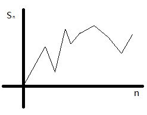
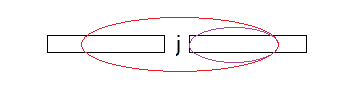

数据结构笔记
在此部分我首先会简单介绍一下“数据结构”与“算法”然后陈列一些数学知识,这些数学知识只需知道，在之后需要的时候回来找得到即可。
最后一部分是算法分析，此部分只需先掌握基础的分析方法。此部分建议自己去写些代码，运行一下从而产生些直观的认识。
有限的指令集接受若干输入，产生输出，一定在有限步骤后终止 这里要特意指明一下，第三条 不依赖于任何一种计算机语言以及具体实现手段，这就是说虽然我们用c++去实现我们这里学习的算法，但实际上它并不是为c++特别准备的，在别的语言中可以完全没有障碍地实现这里所有的算法。
之所以要特别表明是因为这里也有指针这一概念，虽然在我们使用c++实现时，常常用指针类型去实现这一概念，但是实际上也可以用其他类型去实现指针。在这里我所提及的一般性是指指针这一抽象概念，而非实际的指针类型。
简单地说 ADT 表述了是什么，而非怎么做。
一些公式，特意去记并没有什么用。
若N整除A-B，则称A与B模N同余，记作
斯特林(Stirling)近似公式
实际上是有几个2的一个函数。
这个函数增长极缓，但是趋于无穷。
算法分析意在区分好的算法和差的算法，主要评判标准在于 时间 和 空间 两部分。之所以要寻找好的算法，是因为好的算法可以在差的机器上比差的算法在好的机器上更快完成任务。
算法1： 需要运算 条指令来完成任务
算法2： 需要运算 条指令来完成任务
n是给出的数据量
现分别给两台不同的机器，一台 条指令/秒，另一台条指令/秒
当 n = 1000万时
算法1:=20，000秒(多于5.5小时)
算法2:=1，163秒(少于20分钟)
而当n越大时，算法2的优势越明显
当n较小时算法1会更大，但是与算法2的差距并不会很大
| 算法1 | 算法2 | |
|---|---|---|
| n=1亿 | 23天多 | 不超过4小时 |
| n=100 | 秒 | 秒 |
| n=10,000 | 0.02秒 | 1.16秒 |
当n较小时，尽管有上百倍的差距，但是绝对的差距不超过1秒，当n较大时，有几十倍的差距就已经相差很大了。
所以在考虑算法时应该是针对大规模数据和超大规模数据而言的。
另有 o记号 记号 此处不列。
我们常常分析的是一个算法的复杂度上界，因为这个算法不可能比这个上界更糟糕了(O记号)。
O(1) < O() < O(n) < O() < O() < O() < O(n!) < O()[1]
O()与O()相差不大，
O()=O()=O()
INSERTION-SORT(A)
for(int j=2;j<A.length;j++){int key=A[j];//把A[j]插入A[1]……A[j-1]中i=j-1;while(i>0&&A[i]>key){A[i+1]=A[i];i--;}A[i+1]=key}
这个排序类似于整理扑克牌，第i次做之前保证1……i-1是有序的，然后把i放入合适的位置。
比如排序 5,2,4,6,1,3
| key | A完成排序的部分 | A未完成排序的部分 |
|---|---|---|
| 5 | 2,4,6,1,3 | |
| key=2 | 5 | 5,4,6,1,3 |
| 2,5 | 4,6,1,3 | |
| key=4 | 2,5 | 5,6,1,3 |
| 2,4,5 | 6,1,3 | |
| 2,4,5,6 | 1,3 | |
| key=1 | 2,4,5,6 | 6,3 |
| 2,4,5,5 | 6,3 | |
| 2,4,4,5 | 6,3 | |
| 2,2,4,5 | 6,3 | |
| 1,2,4,5,6 | 3 | |
| key=3 | 1,2,3,4,5,6 | 这里过程省略和上差不多 |
根据前面的法则我们设出每条语句的花费
|
第一行 第二行 第三行 0 因为是注释 第四行 第五行 第六行 第七行 第八行 0 第九行 |
因为循环做了n-1次，判断要做n次所以后面多加了一个
分析上界就是要分析最坏情况，这里的最坏情况是A是逆序排列的，则
分析下界就要考虑最优情况（A是顺序排列的），则
实际当中我们不必如此麻烦一个个去算，按照一些简单的想法就可以了：
上界：两重循环
下界：最右情况不作移动，但仍需把所以元素检查一遍
问题 : 最大子列和
给定整数，求的最大值(为方便起见，如果所以数均为负数，则最大子列和为0)
样例 : 输入：4 -3 5 -2 -1 2 6 -2
输出：11
(最大子列:4 -3 5 -2 -1 2 6)
for(int i=0;i<n;i++){for(int j=i;j<n;j++){ThisSum = 0;for(int k=i;k<=j;k++)//计算i->j子列和ThisSum+=A[k];if(ThisSum>MaxSum)//与最大的比较MaxSum=ThisSum;}}
可以看出第4，5行被执行次数最多，我们先计算这里。
此处的花费
在计算t(n)时，分别考虑了i==j,i==j-1 …… i==0&j==n-1
也可以通过算出，答案是一样的，这种想法和代码的形式上更为接近。
可以看到第4，5行被执行次数最多，这部分的快慢实际上决定了整个程序的快慢，换言之优化这部分代码可能会加快整个程序很多，而优化其他部分则没有多大效果。另外，尽管6-7行的代码也有,但仍作为的余项被略去了。
for(int i=0;i<n;i++){ThisSum = 0;for(int j=i;j<n;j++){ThisSum+=A[j];if(ThisSum>MaxSum)//与最大的比较MaxSum=ThisSum;}}
相对于算法1,改动在于第二行、第四行，以及删去了一个循环
这个算法的复杂度分析非常简单是
在本题中，我们把给定序列分为前后两个部分，那么最终的解是max{前半部分的解，后半部分的解，跨越前后部分的解}
int MaxSubSum(A[],left,right){if(left==right){//一个元素，基准情况if(A[left>0]) return A[left]else return 0;}center = (left+right)/2;MaxLeftSum = MaxSubSum(A,left,center);//左子列最大子列和MaxRightSum = MaxSubSum(A,center+1,right);//右子列最大子列和MaxLeftBorderSum = leftBorderSum = 0;for(int i=center;i>=left;i--){leftBorderSum+=A[i];if(leftBorderSum>MaxLeftBorderSum)MaxLeftBorderSum = leftBorderSum;}MaxRightBorderSum = RightBorderSum = 0;for(int i=center+1;i<=right;i++){RightBorderSum+=A[i];if(RightBorderSum>MaxRightBorderSum)MaxRightBorderSum = RightBorderSum;}return Max3(MaxLeftSum,MaxRightSum, MaxLeftBorderSum+ MaxRightBorderSum);//三种答案中最大的一个作为答案}
这个程序写起来长分析也比较困难，再此不详细说明。
要分析这个算法，设起时间复杂度为
则，
然后只需记得答案
一般来说O(nlogn)是比较好的算法了，但对于本题却存在着另一个更简单的算法。
ThisSum = MaxSum = 0;for(int i=0;i<n;i++){ThisSum += A[i]//向右累加if(ThisSum > MaxSum)MaxSum = ThisSum;else if(ThisSum < 0)ThisSum = 0;}
联机算法表述了这个算法的联机特性。
这个算法堪称完美，因为它是一个常量空间，线性时间的联机算法。
这个算法的复杂度分析很容易
但是要理解这个算法的正确性不是那么容易了。
联机算法正确性分析
对于数列
我们有其前n项和数列
最大子列和就是

这种算法实际上固定 j ，变动 i
如果有看见一个更大值，更新最大值
如果有负重新设定j
以此往复
我们根据j,i把数据分为三个部分 （1） j （2） i （3）
做到i时，最大值要么在 （1） 要么在 （2）不可能跨过 j

紫圈必然大于红圈，因为前面加起来为负
这样循环，(2)中的最大值肯定能被找到，反过来推一开始j=0这样在未变j时MaxSum是前面这个子列的最大子列和，换j后总是用(2)的最大值和现有最大值比，所以拿到的也是目前的最大子列和，以此类推，所以这个算法正确。
如果利用一下图，可以看见固定起点无非有大于零，等于零，小于零三种情况。
大于零的去拿去比较，等于零的无所谓继续做，小于零的说明从那个起点开始的最大值肯定找过了，以之后点为终点的值不可能为最大值，所以要换起点。